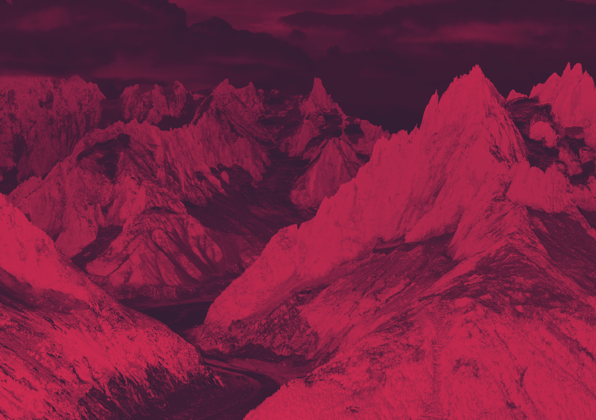

Paso 1 de 2
¡Vamos allá!
Has llegado hasta el test de Siroko. Responde las siguientes preguntas y genera tu código premiado a medida.
Paso 1 de 2
Has llegado hasta el test de Siroko. Responde las siguientes preguntas y genera tu código premiado a medida.
